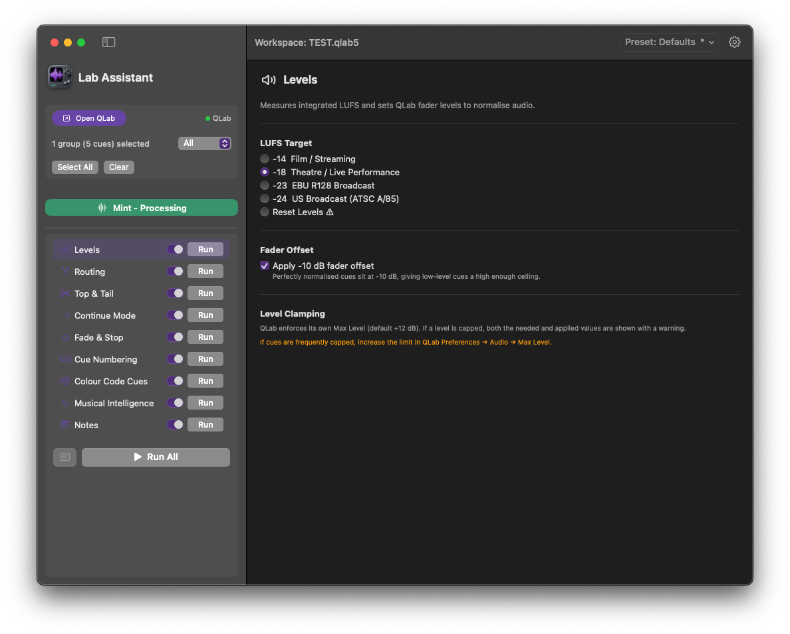
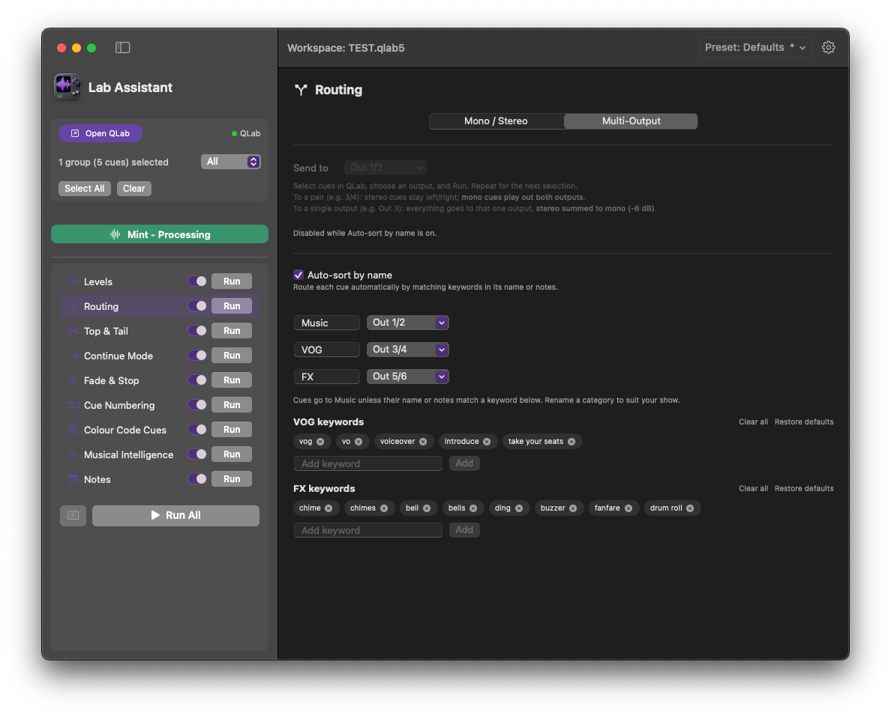
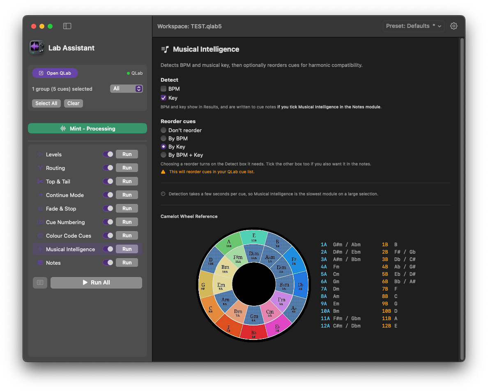
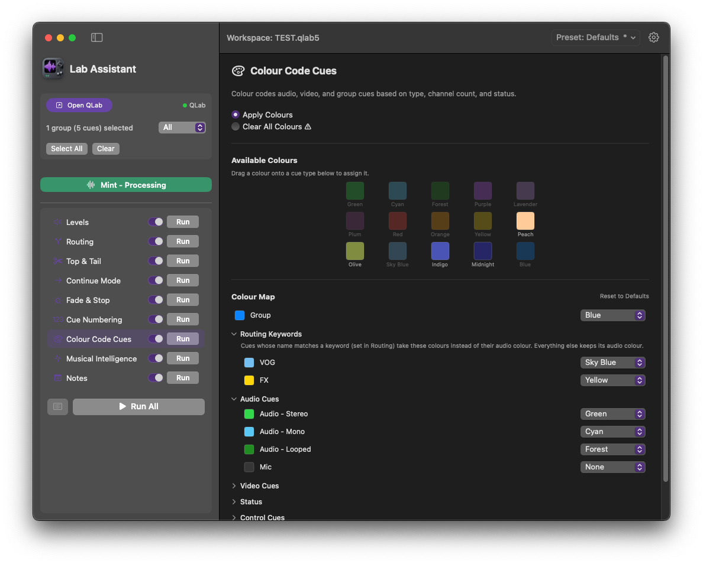
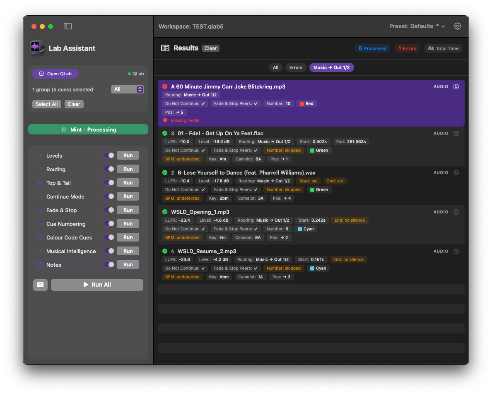
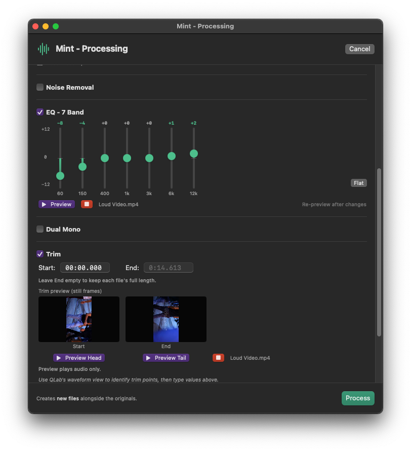

Lab Assistant
{{ site.data.content.apps.labassistant.subtitle }}
One-time purchase · 2 activations
{{ site.data.content.apps.labassistant.version }} · Released {{ site.data.content.apps.labassistant.released }}
May be tax deductible for AV professionals.
{{ site.data.content.apps.labassistant.tagline }}
{{ site.data.content.apps.labassistant.description }}






Mint Audio & Video Converter & Editor
Built into Lab Assistant. Select cues in your QLab workspace and Mint converts, cleans, and edits the audio and video behind them. The results drop straight back into QLab.
- Convert audio - read WAV, AIFF, MP3, AAC, FLAC, OGG, and M4A; export WAV, AIFF, MP3, AAC, or FLAC at sample rates up to 96 kHz and 16, 24, or 32-bit float
- Convert video - export MP4 or MOV with H.264 or HEVC and set resolution and frame rate, or keep the picture untouched and just process its audio; reads MP4, MOV, MKV, AVI, and WebM
- Extract audio - pull the soundtrack out of a video cue into a clean audio file
- Edit and clean - 7-band EQ, LUFS normalisation, noise removal, fade in/out, trim, and gain, baked into the file (QLab crosspoints remain the non-destructive option)
- Preview - audition changes through any output device with adjustable length and a fade preview, and see the start and end frames when you trim a video, before you commit
- Batch - process your whole cue selection in one pass
Processing Modules
Switch on the jobs you want and hit Run All to process the whole selection in one pass, now around four times faster on large shows. Each module also has its own Run button.
- Levels - measure integrated LUFS and set QLab fader levels to normalise audio. Four broadcast targets (-24, -23, -18, -14 LUFS), optional -10 dB offset, and reset mode
- Mono Routing - set mono cues to dual mono, sum stereo to dual mono, or reset routing to defaults
- Multi-Output Routing - send cues to any output or pair, up to 64 outputs, with dual-mono and stereo fold-down handled automatically, or let auto-classify sort Music, VOG, and FX to their own outputs in one pass
- Top and Tail - detect silence at the start and end of audio cues and set trim points with configurable padding, while respecting in and out points you've already set
- Musical Intelligence - detect BPM and musical key, then sort cues by Camelot wheel for smooth transitions
- Colour Code - customisable colour map for audio, video, group, and control cues by type, channels, category (VOG, FX), and status
- Cue Numbering - add missing numbers, renumber sequentially, group sub-numbers, or clear all
- Fade and Stop - insert fade and stop cues for the same group or entire cue list
- Continue Mode - set Do Not Continue, Auto-Continue, or Auto-Follow on selected cues
- Notes - write processing results to QLab cue notes, or clear notes from selected cues
- Presets - save your whole setup (modules, levels, routing, colours, numbering, notes, and Mint settings) as a named preset and switch between shows in a click, with a built-in Defaults reset
- Edit mode handled - no need to switch QLab to Edit mode first. Lab Assistant flips to Edit to make changes, then restores Show mode.
Who It's For
Speeds up show prep with no level surprises or voiceovers coming out one side of the PA.
- QLab 5 users on the free or licensed version
- AV techs running throw-and-go audio stings and playback for events
- Corporate events, awards nights, and conference operators
- Anyone who's spent too long manually setting QLab cue levels, fixing mono routing, or trimming silence